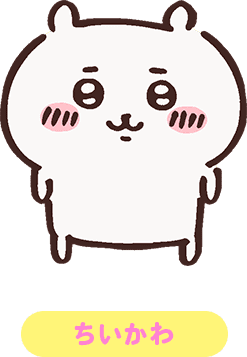
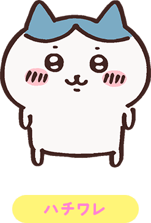
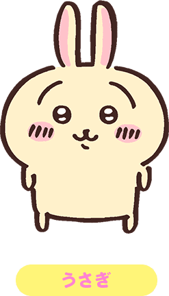

吉伊/吉伊卡哇/小可爱（日语:ちいかわ 英语:chiikawa）
配音：青木遥
本作主角，生日为2017年5月1日。
台词基本上由简单的音节构成。虽然爱哭但在关键的时刻非常勇敢坚强，运气很好，现在住在抽奖中的白色房子里，武器是粉色的刺叉。 非常喜欢自己的好朋友哈奇和乌萨奇。
现在在为了除草5级努力学习中。
哈奇/小八/哈奇瓦乐/八字猫（日语:ハチワレ 英语:hachiware）
配音：田中诚人
主角团之一，吉伊和乌萨奇的好朋友。生日为2020年5月1日。
主角团中唯一能完整使用人类语言说话的存在。好奇心旺盛的乐天派，偶尔会露出天然的一面，住在山洞里，武器是蓝色的刺叉。 吉他弹唱了动画的片尾曲《自言自语》。
除草5级。
乌萨奇/兔（日语:うさぎ 英语:usagi）
配音：小泽亚李
主角团之一，吉伊和哈奇的好朋友。生日为2019年1月22日。
台词常为“呀哈”“呜啦”等怪声。直觉敏锐，自由奔放又神秘的存在。住所至今是谜，武器是两端能发射火药的棍子。 初次登场是在同作者的另一部漫画中。
除草3级。